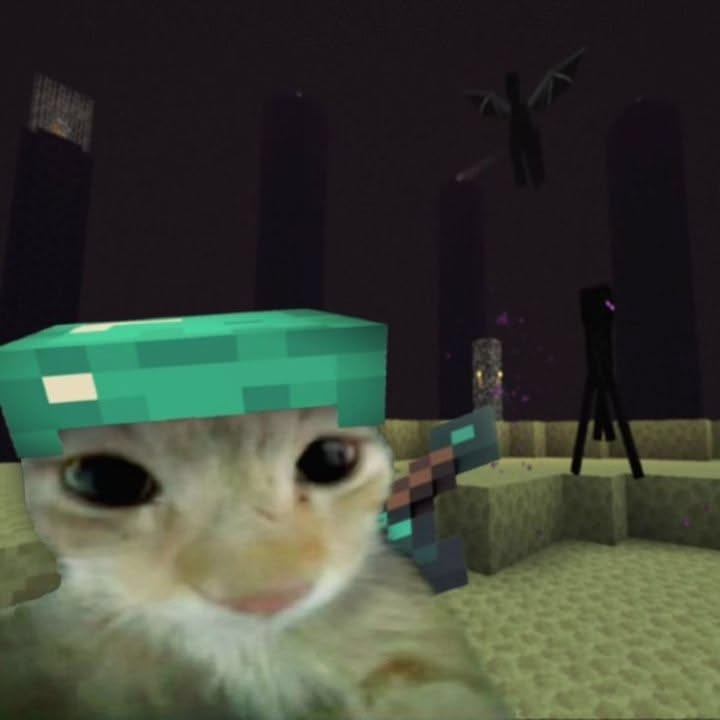
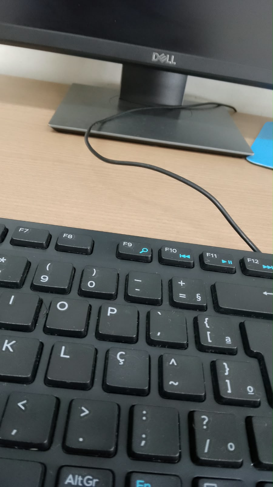
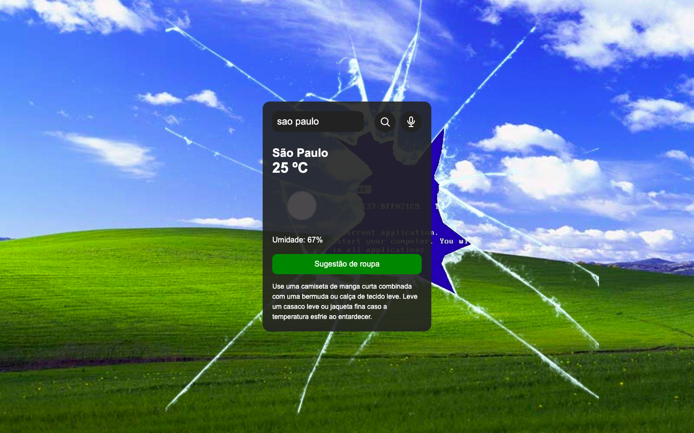
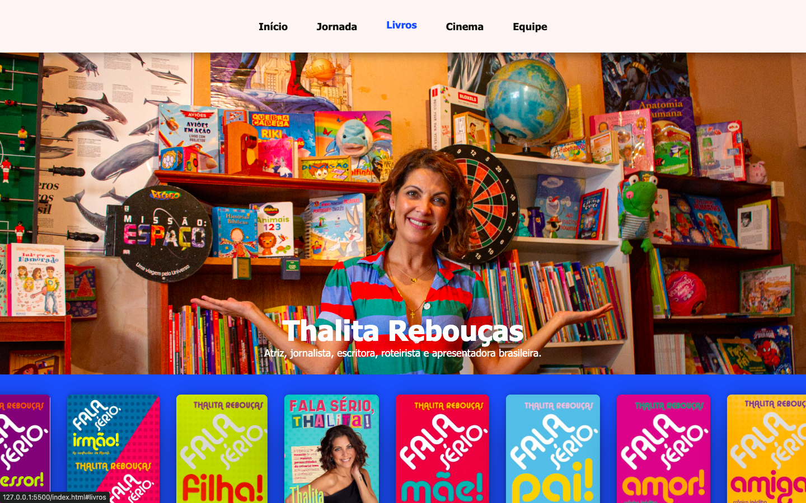
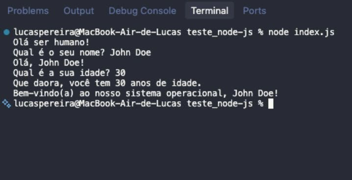
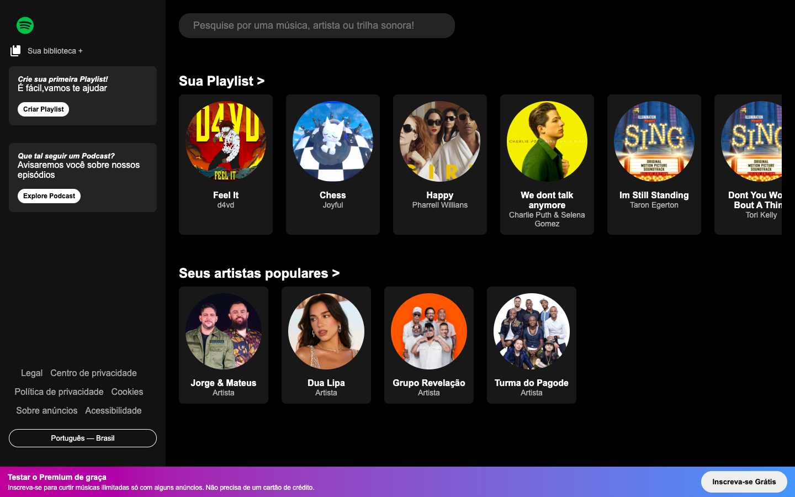
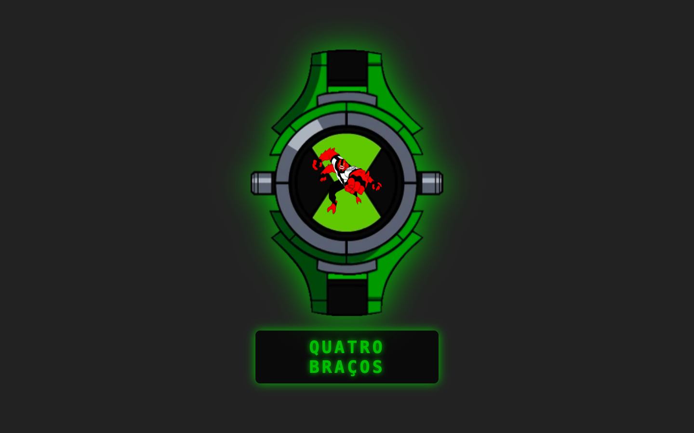

Alice Silva Pereira
Estudante de programação.

Estudante de programação.
O que estou aprendendo e utilizo para construir meus projetos
Semântica e Estrutura
Grid, Flexbox e Animações
DOM, Async/Await e APIs
Versionamento de Código
Ambiente Back-end e APIs
Olá! Meu nome é Alice Silva Pereira, tenho 14 anos e sou estudante de programação. Estou sempre em busca de novos projetos e oportunidades para aprimorar minhas habilidades na área de desenvolvimento web.

Minha jornada na programação começou quando decidi aprender HTML, CSS e JavaScript por conta própria. Desde então, venho estudando, criando projetos e colocando em prática tudo o que aprendo.
Estou sempre buscando evoluir minhas habilidades e aprender novas tecnologias. Tenho interesse em seguir na área de desenvolvimento Full-Stack, unindo conhecimentos de front-end e back-end para criar soluções completas.
Meus projetos em cena!

O PixelHub é um catálogo web que exibe jogos através de cards gerados dinamicamente, apresentando imagens, sinopses, avaliações e links oficiais. Praticou-se manipulação do DOM, organização de dados em arrays de objetos, responsividade e estilização personalizada baseada na identidade visual de cada jogo.

O SenseFire é uma aplicação institucional criada para apresentar um sistema IoT de prevenção de incêndios florestais, exibindo monitoramento de sensores e relatórios em tempo real. O desenvolvimento focou na construção de layouts adaptativos utilizando CSS Grid, Flexbox, media queries e interatividade com JavaScript.

O DeliveryHub simula o site de uma hamburgueria delivery com uma interface moderna para exibir o cardápio e facilitar a realização de pedidos integrados ao WhatsApp. O projeto priorizou o uso de HTML semântico, estruturação avançada com CSS, navegação fluida e excelente experiência do usuário.

A Pokédex é um projeto que permite pesquisar Pokémons por nome ou número, navegar sequencialmente por botões de anterior/próximo e exibir informações e sprites animados dinamicamente. Praticou-se manipulação de DOM, consumo de APIs com fetch, programação assíncrona (async/await), tratamento básico de erros e criação de uma interface responsiva inspirada nos jogos clássicos.

O Previsão do Tempo consulta condições climáticas em tempo real e utiliza Inteligência Artificial para sugerir vestimentas adequadas ao usuário. Praticou-se manipulação avançada do DOM, programação assíncrona (async/await) e consumo de múltiplas APIs (OpenWeatherMap e Groq) para criar uma experiência fluida e responsiva.

O Blog Selibi é um projeto literário desenvolvido para homenagear a escritora Thalita Rebouças, documentando sua jornada, principais obras e adaptações cinematográficas. O foco técnico foi em HTML5 semântico, layouts responsivos com CSS Grid/Flexbox e animações CSS puras (@keyframes) para construir carrosséis e efeitos interativos.

Uma aplicação interativa via linha de comando (CLI) desenvolvida em Node.js aplicando Orientação a Objetos. O projeto conta com modularização da classe Person, tratamento e validação de inputs e um pipeline de Integração Contínua (CI) automatizado via GitHub Actions para testar compatibilidades de versão.

Uma aplicação web interativa inspirada no design do Spotify. O projeto consome a iTunes Search API via fetch/async-await para busca de músicas em tempo real, renderização dinâmica de álbuns e tocador com prévia de áudio instantânea.

Uma aplicação web interativa inspirada no relógio clássico do Ben 10. Desenvolvida em JavaScript Vanilla, utiliza manipulação do DOM e animações CSS para criar efeitos holográficos e alternar dinamicamente a projeção dos alienígenas a cada clique.
Entre em contato via WhatsApp.